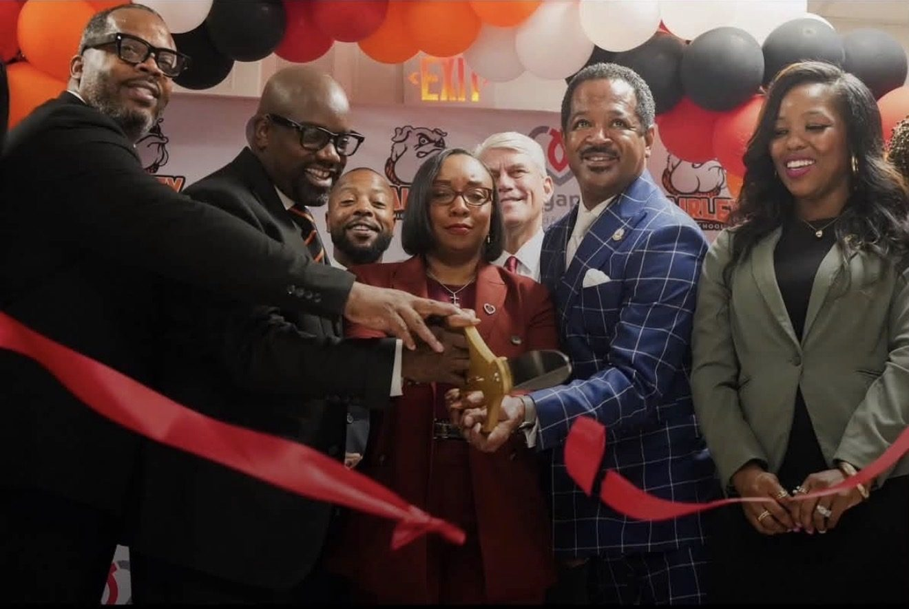
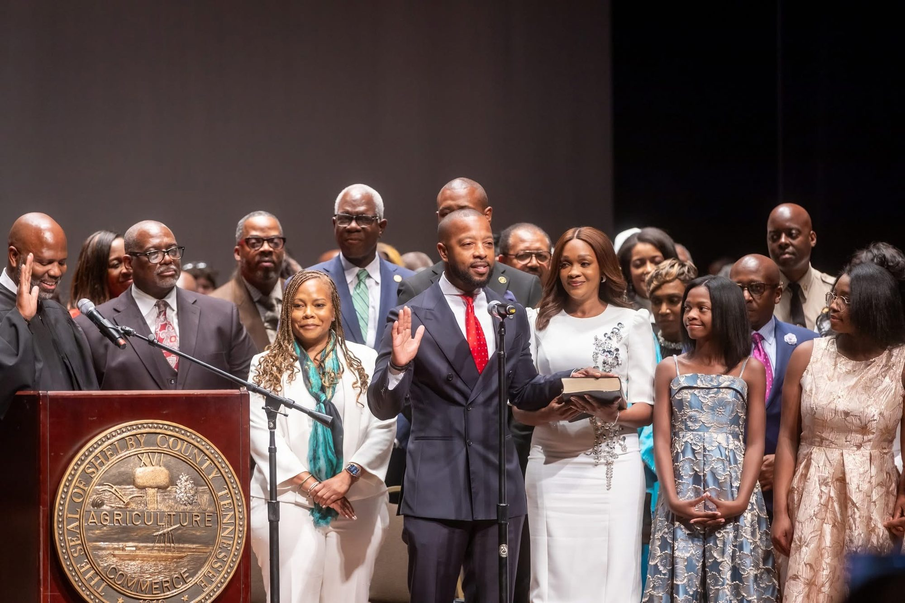
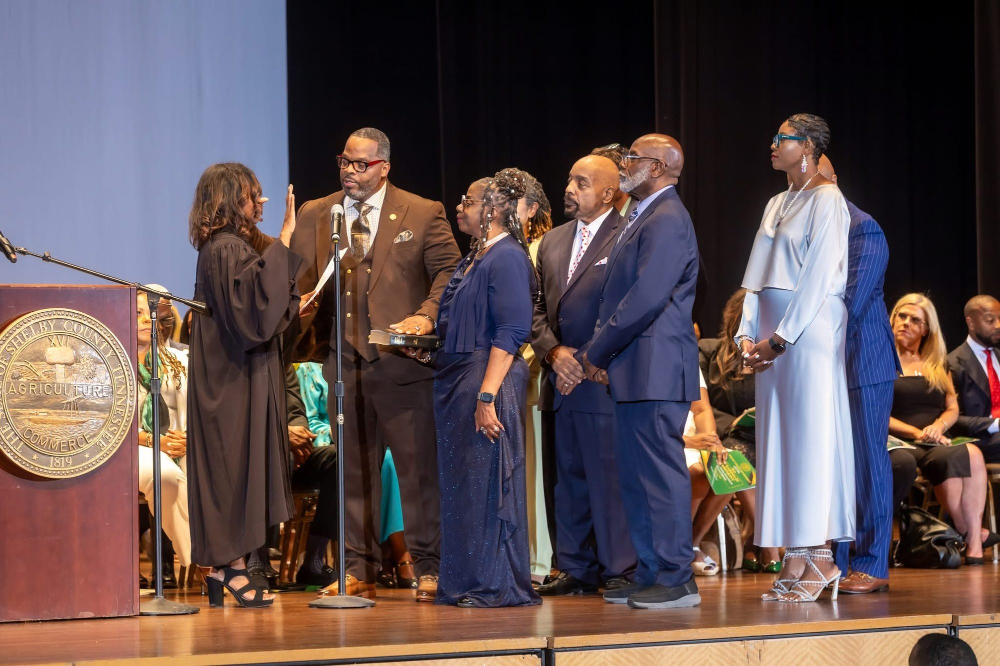
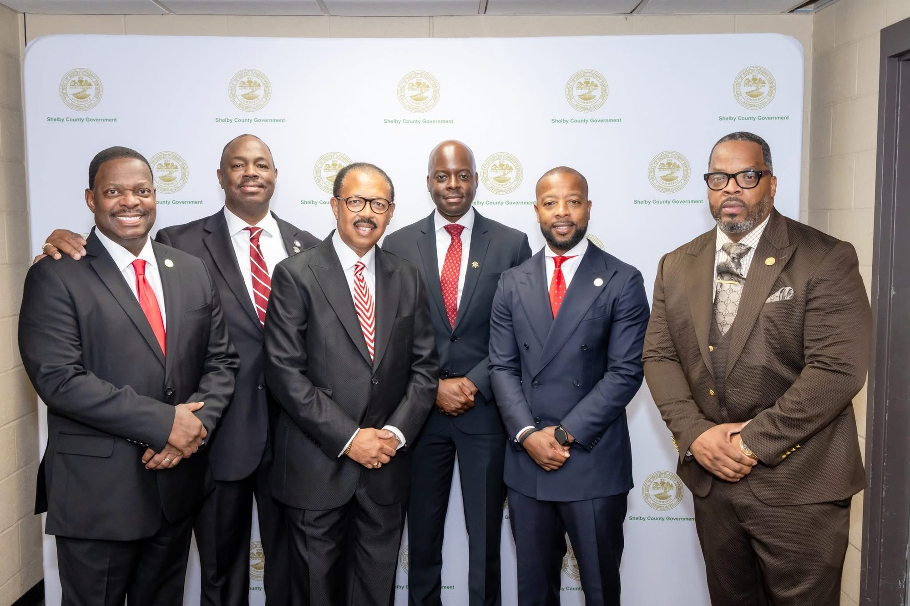

T. L. Harris, Commissioner · District 6
- District 6Whitehaven and Southwest Memphis
- 1 of 9Elected commissioners on the school board
- Sept. 1, 2026Took office
- 30+ yearsLiving in Memphis
Sources: MSCS Board of Education; Tennessee Firefly, August 10, 2026; Chalkbeat Tennessee, April 14, 2026.
The Standard Starts Now
Working for the students, families and schools of District 6, from Whitehaven across Southwest Memphis.
In the news My interview on WREG’s Informed Sources Extra
Meet T. L. Harris
T. L. Harris has lived in Whitehaven for more than 30 years. He came up through Memphis public schools, graduating from East High School, and now helps govern them as the District 6 commissioner on the Memphis-Shelby County Schools Board of Education.
Before he took office on September 1, 2026, he served in the military, worked with the Memphis Police Department, managed cases for young people and families at Youth Villages, worked in youth ministry and served as chief financial officer of a private medical office. For three years he led five community centers for the city's Memphis Gun Down summer program, in neighborhoods including Frayser and Raleigh.
“I always tell children that any door they want can be opened with education.”
T. L. Harris
Raising the Standard for District 6
- Safe schools
- Strong academics
- Fiscal discipline
- Community partnership
My goals for District 6
I ran on early reading, safe schools, transparency and parent engagement. Progress on each is reported at the start of every quarter.
Early Literacy and Third-Grade Reading
Reading by the end of third grade decides how school goes from then on. I'll keep third-grade reading in front of the Board, ask for the numbers school by school, and report what I learn back to District 6 every quarter. I'm one of nine commissioners, so I'll say plainly what I can move and what depends on the district.
Safe and Supportive Learning Environments
Students learn when they feel secure, and teachers teach better when expectations are clear. I'll ask for school climate and discipline data to be reported to the Board and published, and I'll raise conditions I see in District 6 schools on the public record. I don't run individual schools or handle student matters, but I can make sure the Board is looking at the right information.
Quarterly Town Halls
Residents should have a predictable place to raise something and get answered in public. I'll hold a town hall in District 6 every quarter and publish a summary afterward, including what was asked and what follow-up is owed. What the district does with what's raised is out of my hands, so I'll keep following up until residents get an answer.
Public Performance Dashboard
Information the public can't find can't hold anyone accountable. I'll keep the numbers on this site current, with every figure tied to a named district or state source. I'll also ask the district to improve its own public reporting, since a district-wide dashboard is theirs to build.
On the calendar
Board meetings are open to the public and streamed live. Public comment is taken at business meetings.
Board Business Meeting
Frances E. Coe Administration Building, 160 S. Hollywood Street, Memphis
Business System Review
Board Committee Meeting
Find your way around
- AboutHis story, background and service
- PrioritiesThe eight issues I am tracking and where each stands
- District 6The 26 schools in the district and how to find yours
- The BoardHow the board works, meetings and public comment
- NewsUpdates from my office and coverage of my work